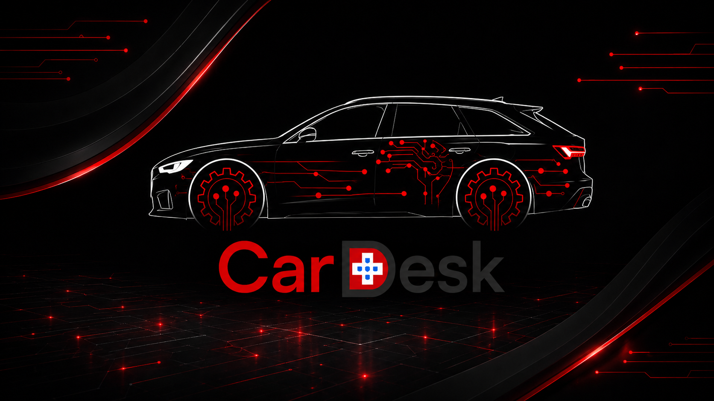

Verständlich zeigen
Angebot, Vertrauen und Kontaktwege werden klar strukturiert.
Digitalstudio für Schweizer KMU
Webseiten, Sichtbarkeit und einfache Systeme, die im Alltag funktionieren.
Positionierung
Viele KMU brauchen keine laute Digitalstrategie. Sie brauchen eine saubere Website, klare Informationen und einfache Systeme, die im Tagesgeschäft helfen.
Angebot, Vertrauen und Kontaktwege werden klar strukturiert.
Listen, Aufgaben und Informationen werden nutzbar gemacht.
Wiederkehrende Schritte werden sichtbar und gezielt vereinfacht.
Leistungen
Kurze Wege, klare Prioritäten und digitale Grundlagen, die mit Ihrem Unternehmen wachsen können.
Ein klarer Webauftritt, der erklärt, Vertrauen schafft und Kontakt erleichtert.
Einfache Übersichten für Informationen, Aufgaben, Listen und kleine Teams.
Abläufe sichtbar machen und dort vereinfachen, wo es wirklich entlastet.
Individuelle Lösungen testen, bevor daraus grössere Systeme entstehen.
Pilotprojekte / aktuelle Arbeiten
LDigital ist im Aufbau und entwickelt die eigene Arbeitsweise über konkrete Projekte, Konzepte und Pilotideen weiter.
Kundenprojekt / interne Prüfversion
Ein moderner Webauftritt für eine reale Garagensituation wird vorbereitet: klare Leistungen, Kontaktführung und digitale Grundlage für spätere Kundenprojekte.
Referenzen ansehen
Konzept / Pilotprojekt
CarDesk zeigt, wie LDigital nicht nur Webseiten baut, sondern digitale Abläufe und Systemlogik für Garagen mitdenkt.
CarDesk ansehenArbeitsweise
Keine unnötige Komplexität. Erst verstehen, dann strukturieren, dann sauber umsetzen und verbessern.
Ausgangslage, Zielgruppe und wichtigste Hürden einordnen.
Inhalte, Abläufe und Prioritäten in eine klare Form bringen.
Website, Werkzeug oder Pilot pragmatisch aufbauen und prüfen.
Nach echtem Feedback gezielt nachschärfen und erweitern.
Systemdenken
CarDesk ist ein Konzept- und Pilotprojekt für Garagen. Es macht sichtbar, wie Termine, Fahrzeuge, Aufträge und Kommunikation später in eine ruhigere digitale Übersicht gebracht werden könnten.
Noch kein fertiges Produkt, kein Serienversprechen und keine öffentliche Software. Der Nutzen wird über reale Abläufe geprüft.
Mehr zum KonzeptKontakt
Schreiben Sie kurz, worum es geht. Im Erstgespräch klären wir, welcher digitale Schritt sinnvoll ist und was vorerst bewusst weggelassen werden kann.